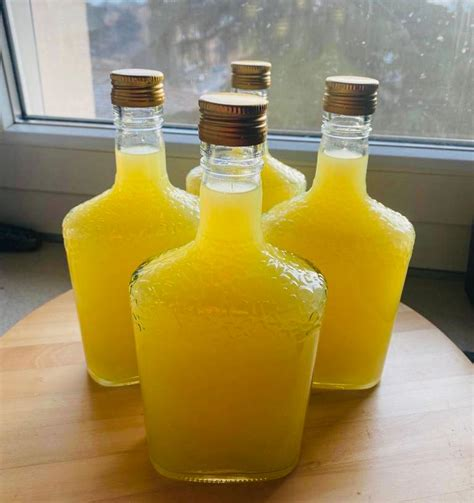

Total Time Prep: 40 min. + standing
This limoncello recipe makes a drink better than any store-bought version. It's perfect as an after-dinner treat on its own, or whipped up in a cocktail.
Using a vegetable peeler, peel rind from lemons (save lemons for another use). With a sharp knife, scrape pith from peels and discard. Place lemon peels and vodka in a large glass or plastic container. Cover and let stand at room temperature for at least 2 weeks, stirring once a week.
In a large saucepan, bring water and sugar to a boil. Reduce heat; simmer, uncovered, for 10 minutes. Cool completely.